Linux5.10.140_User’s Compilation Manual_V1.0
Document classification: □ Top secret □ Secret □ Internal information ■ Open
Copyright Notice
The copyright of this manual belongs to Baoding Folinx Embedded Technology Co., Ltd. Without the written permission of our company, no organizations or individuals have the right to copy, distribute, or reproduce any part of this manual in any form, and violators will be held legally responsible.
Forlinx adheres to copyrights of all graphics and texts used in all publications in original or license-free forms.
The drivers and utilities used for the components are subject to the copyrights of the respective manufacturers. The license conditions of the respective manufacturer are to be adhered to. Related license expenses for the operating system and applications should be calculated/declared separately by the related party or its representatives.
Application Scope
This manual is mainly applicable to the Linux5.10.209 operating system on the Forlinx OK-MA35-S21 platform. Other platforms can also refer to it, but there will be differences between different platforms. Please make modifications according to the actual conditions.
Revision History
Date |
Manual Version |
SoM Version |
Carrier Board Version |
Revision History |
|---|---|---|---|---|
10/12/2024 |
V1.0 |
V1.0 |
V1.1 and Above |
OK-MA35-S21 User’s Compilation Manual Initial Version |
Overview
This manual is designed to enable users of the Forlinx Embedded development board to quickly understand the compilation process of the products and familiarize themselves with the compilation methods of Forlinx products. The application program needs to be cross-compiled on the Linux operating system before it can run on the development board. According to the method in the compilation manual, users can compile their own software code through practical operation.
The manual will provide instructions for setting up the environment but there may be some unforeseen issues during the environment setup process. For beginners, it is recommended to use the pre-configured development environment provided by us. This will allow you to quickly get started and reduce development time.
Linux systems are typically installed in three ways: dual system on a real machine, single system on a real machine, and virtual machine. Different installation methods have their advantages and disadvantages. This manual only provides methods to build ubuntu in a virtual machine. Computer hardware requirements: It is recommended to have at least 6GB of memory or more, so that you can allocate some memory to run the virtual machine (the virtual machine is recommended to have more than 2GB) and still do other operations on Windows, otherwise it will affect the performance of Windows.
The manual is mainly divided into four chapters:
Chapter 1. is mainly about the installation of VMware, and the version used is VMware® Workstation 15 Pro15.1.0. Users need to install VMware before using the ubuntu development environment.
Chapter 2. mainly introduces the method of loading the ubuntu development environment provided by Forlinx, and the development environment is 64-bit ubuntu20.04.
Chapter 3. mainly introduces the method of building a new ubuntu development environment. It takes 64-bit Ubuntu 20.04 as an example to describe the creation process of Ubuntu. Due to different computer configurations, unexpected problems may arise during the setup process. It is recommended for beginners to use the environment that we have set up directly.
Chapter 4. mainly introduces the methods of compiling the source code related to the development board.
A description of some of the symbols and formats in the manual:
Format |
Meaning |
|---|---|
Note |
Note or information that requires special attention, be sure to read carefully. |
üìö |
Relevant notes on the test chapters. |
Ô∏èüõ§Ô∏è |
Indicates the related path. |
Blue font on gray background |
Refers to commands entered at the command line (Manual input required). |
Black font |
Serial port output message after entering a command |
Bold black |
Key information in the serial port output message |
// |
Interpretation of input instructions or output information |
Username@Hostname |
root@ok3568: development board serial port login account information, |
You can determine the operating environment for functional operations based on this information.
1. VMware Virtual Machine Software Installation
This chapter mainly introduces the installation of VMware virtual machines, using VMware Workstation 15 Pro v15.1.0 as an example to demonstrate the installation and configuration process of the operating system.
1.1 VMware Software Download and Purchase
Visit Vmware official website https://www.vmware.com/cn.html for downloading Workstation Pro and obtaining the product key. VMware is a paid software, you need to buy it yourself, or use the trial version provided by VMware.
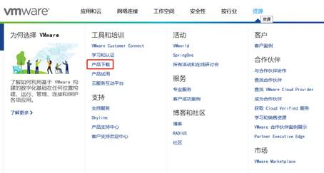
After the download is complete, double-click the installation file to start the installation program.
1.2 VMware Software Installation
Double-click the startup program to enter the installation wizard.
Click on “Next”.
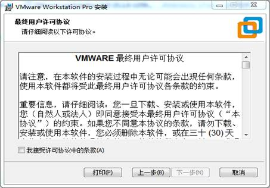
Check the terms in the license agreement that I accept, then click “Next”.
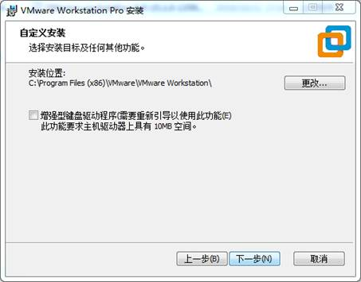
Modify the installation location to the partition where you want to install the software on your computer, then click ‘“Next”.
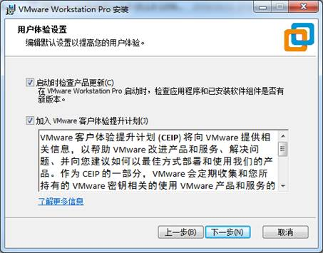
Check and click on “Next”.
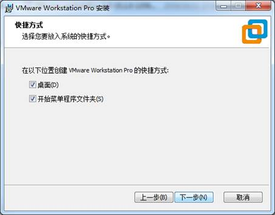
Check the box to add a shortcut, then click “Next”.
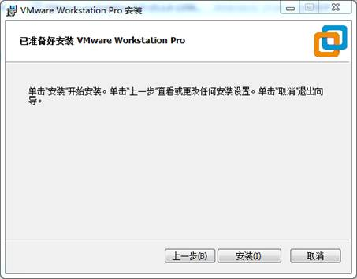
Click “Installation”.

Wait for the installation to complete.
Click “Finish” to try it out. If users need to use it for a long time, they need to buy it from the official and fill in the license.
2. Loading the Existing Ubuntu Development Environment
It is recommended that beginners use the virtual machine environment built by Forlinx directly. After understanding this chapter, you can directly jump to the compilation chapter for further study.
The development environment provided is: forlinx (username), forlinx (password).
There are two ways to use a virtual machine environment in VMware: one is to directly load an existing environment, and the other is to create a new environment. Let’s first talk about how to load an existing environment.
First, download the development environment provided by Forlinx. In the development environment documentation, there should be an MD5 checksum file. After downloading the development environment, you should verify the integrity of the compressed package using the MD5 checksum. (You can use an on-line MD5 checksum tool or download a specific MD5 checksum tool for this purpose). To check if the checksum in the verification file matches the checksum of the file itself. If they match, the file download is successful. If they don’t match, it suggests that the file may be corrupt, and you should consider downloading it again.
Select all compressed files and right-click to extract them to Nuvoton Ubuntu 20.04, as shown in the following figure:
The MA35 Standard Environment folder appears after the decompression is complete, where .vmx is the file to be opened by the virtual machine.
Open the virtual machine and select the extracted file in the MA35 development environment: Nuvoton-Ubuntu 20.04.vmx
Turn on this virtual machine after loading is complete to run it and enter the system’s interface.

The account providing the development environment is “forlinx”, and the password is “forlinx”. After filling in the password, select Sign in to log in.
Note: If, after booting, the “Client OS CPU Disabled” is displayed. Shut down or reset the virtual machine. Restart the virtual machine. During the startup process, press and hold the shift key to pop up the grub menu. Select advanced options for ubuntu。 Then select linux 5.13.0-30-generic to boot.
3. New Ubuntu Development Environment Setup
Note: Beginners are not recommended to build the system by themselves. It is suggested to use the existing virtual machine environment. If you do not need to build the environment, you can skip this section. This section mainly explains the process of building the ubuntu system.
3.1 Ubuntu System Creation
3.1.1 Ubuntu Virtual Machine Setup
Open the VMware software, click on create a new virtual machine. Enter the following interface
Choose custom, and click “Next”.
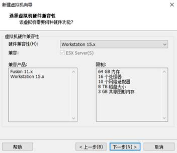
Select the compatibility with the corresponding version of VMware, which can be found in Help->About VMware Workstation, and click “Next”.
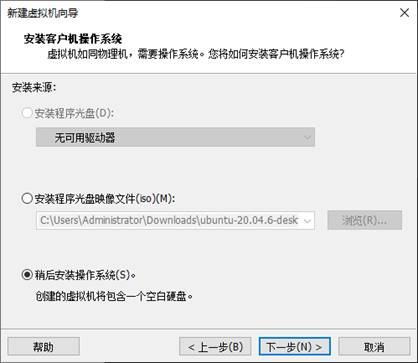
Select Install the operating system later and click “Next”.
Leave the default and click “Next”.
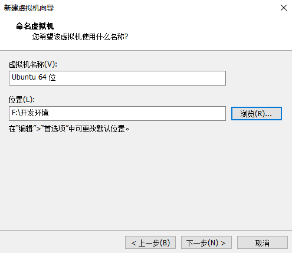
Modify the virtual machine name and installation location, click “Next”.
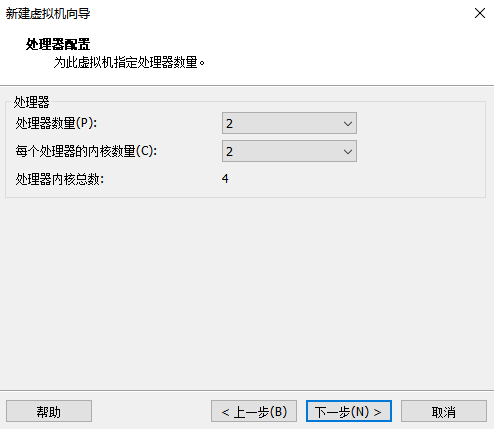
Set the number of processors as appropriate.
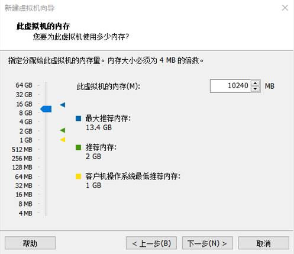
Also, set the memory size according to the actual situation; it is recommended to use 16G (adjusted according to the performance of your machine).
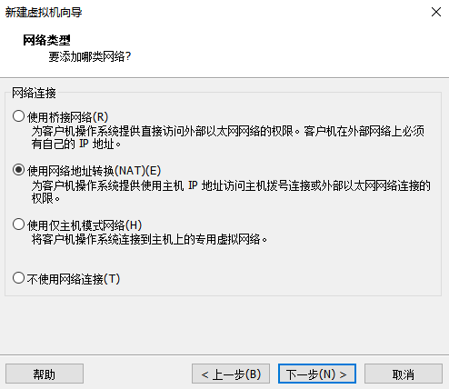
Set the network type, the default is NAT mode, click Next. Keep the default values for the remaining steps until you reach the step to specify the disk capacity.
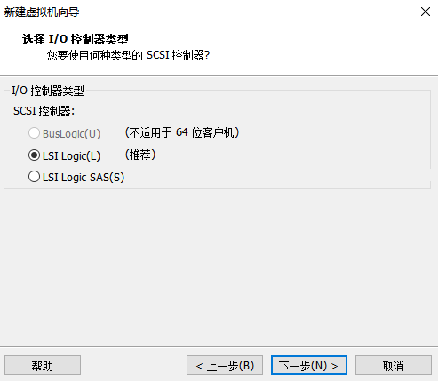
The default selection for the IO controller type here is LSI.
The default selection here is also SCSI.
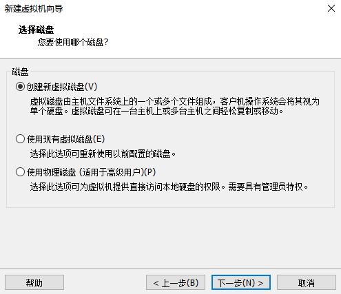
Choose to create a new virtual disk here.
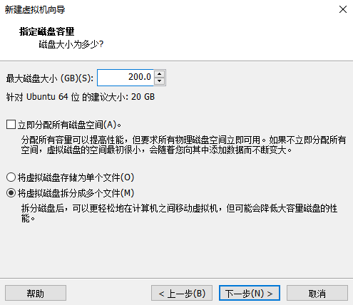
Set the disk size to 200 gigabytes and select the form in which the disk exists, then click Next to finish.
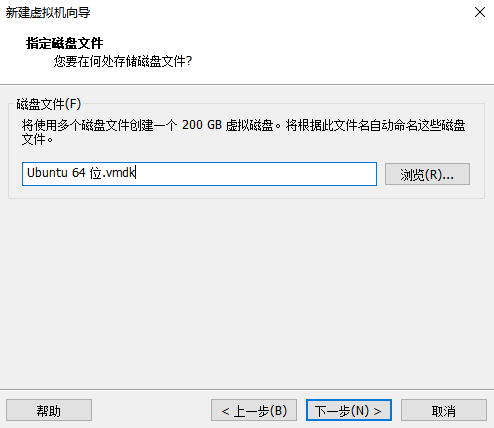
Specify the disk file, the default one here is fine.
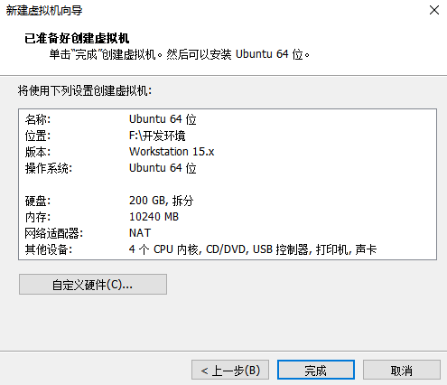
Click Finish by default.
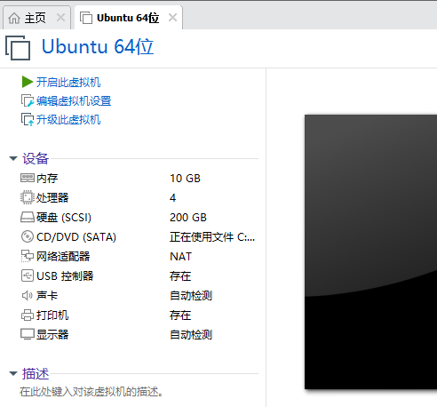
The virtual machine creation is now complete.
In the next section, we will introduce the installation of Ubuntu system in the virtual machine, which is similar to the installation method in the real machine. Here we describe the method of installing Ubuntu system in a virtual machine.
3.1.2 System Installation
The version of Ubuntu chosen to install is 20.04, first of all, go to the official website of Ubuntu to get the Ubuntu20.04 64-bit image,the download address is download “ubuntu-20.04.6-desktop-amd64.iso” version.
Right-click on the newly created Ubuntu 64-bit and select Settings from the pop-up menu.
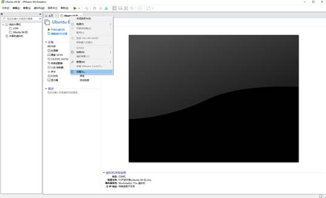
The “Virtual Machine Settings Menu” pops up as shown below:
Click on CD/DVD (SATA), select “Use ISO image file,” browse and choose the previously downloaded Ubuntu image, then click “OK” to confirm.
After setting up the image, ensure that the network is available. Then, start the virtual machine and proceed with the installation of the Ubuntu image.
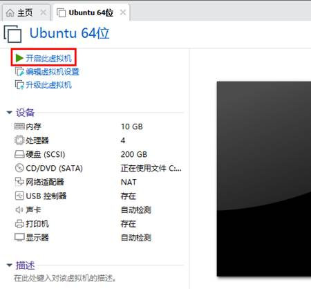
After starting the virtual machine, wait for the installation interface to appear as shown below.

After selecting the language on the left side as shown in the image, click “Install Ubuntu”, and the language selection interface will pop up. Ubuntu default language is English, of course, you can also choose others, the default choice of language in the later stage can also be reset,after selection then click continue.
Next, by default, select continue to finish the installation, the installation process will be very slow, then click “continue”:
Next, select continue by default to continue the installation, the installation process will be very slow, and then click “continue”:
Next, select the timezone. You can either click on the Shanghai timezone or enter “Shanghai” (or choose the appropriate timezone based on your location). Then, click “Continue” to proceed. Finally, set your username and password and click “continue” to automatically install the program:
The installation process is shown in the figure below, you can skip it if the network is bad, it will not affect the installation.
After the installation, click “Restart Now” to reboot (or click “Reboot Client”):
The system interface after the reboot is complete as shown below:
3.1.3 Basic Ubuntu Installation
After installing the Ubuntu20.04 operating system, there are a few configurations to make.
VMware Tools Installation:
Next, install VMware Tools. Without installing this tool, you won’t be able to copy and paste and drag file between the Windows host and the virtual machine. First click on “Virtual Machines” on the VMware navigation bar, then click “Install VMware Tools” in the drop-down box.
Once done, enter Ubuntu and the VMware Tools CD icon will appear on your desktop, click into it:
Double-click on the VMwareTools icon, go to it and see a zip file VMwareTools-10.3.10-12406962.tar.gz (it may be different for different VM versions).

Copy the file under the home directory (i.e., the directory of the home personal username):
Press the keyboard [Ctrl+Alt+T] to bring up the terminal command interface, use the tar command to unzip the VMwareTools installation package (using the sudo command will prompt you to enter the password, follow the prompt to enter the password and press Enter, Linux system password input has no echo, make sure the password is correct and press Enter to confirm):
forlinx@ubuntu:~$ sudo tar -xvf VMwareTools-10.3.10-12406962.tar.gz
[sudo] password for forlinx:
After executing the extract command, use ls to view the file directory vmware-tools-distrib, and go to the directory
forlinx@ubuntu:~$ ls
Desktop examples.desktop nfs snap tftp VMwareTools-10.3.10-12406962.tar.gz vmware-tools-distrib work
forlinx@ubuntu:~$ cd vmware-tools-distrib/ //Use the CD command to enter the directory
forlinx@ubuntu:~/vmware-tools-distrib$ ls //View the files in this directory
bin caf doc etc FILES INSTALL installer lib vgauth vmware-install.pl
In the current directory, enter sudo ./vmware-install.pl to install, enter the password after pressing Enter, and then start the installation. When you encounter [yes]/[no], enter yes, and press Enter for the rest to install by default.
forlinx@ubuntu:~/vmware-tools-distrib$ sudo ./vmware-install.pl
[sudo] password for forlinx: //Enter the password of the forlinx account, no display, cannot see the input content
The installation process information is long, here omitted.
open-vm-tools packages are available from the OS vendor and VMware recommends
using open-vm-tools packages. See http://kb.vmware.com/kb/2073803 for more
information.
Do you still want to proceed with this installation? [no] yes //Enter yes
... ...
After completing the VMware tools tool, you can achieve file copy and paste, virtual machine adaptive full display and other functions between Windows and Ubuntu. If the virtual machine cannot be displayed in full screen, you can click View, select Auto-resize Guest Display, and click Fit Guest Now to achieve the virtual machine. VMware tools installation is successful.
Basic Settings:
Make most of the system settings in the location shown below. A lot of the setup requirements on Ubuntu can be done here.
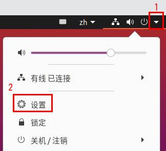
3.1.4 Ubuntu Network Settings
NAT Mode
Before using the network, make sure that our virtual machine can connect to the Internet, open the virtual machine settings, and change the network bridge mode in the network adapter to “NAT mode”:
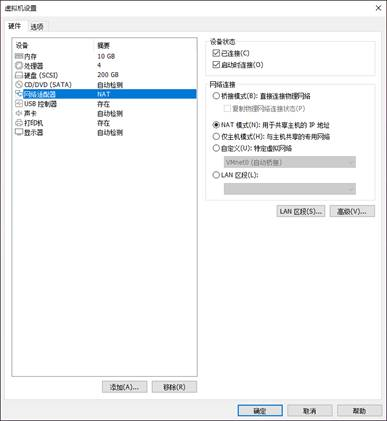
When the VMware virtual NIC is set to NAT mode in a virtual machine, the network in the Ubuntu environment can be set to dynamic IP. The virtual NAT device and the host NIC are connected to communicate for Internet access in this mode. This is the most common way for our VM to get on the extranet.


The network is set to dynamic IP.
Bridge Mode:
If TFTP, SFTP and other servers are used, the network contact mode of the virtual machine needs to be set as the bridge mode. When the VMware virtual NIC is set to bridge mode, the host NIC and the VM NIC communicate via a virtual bridge, which requires the Ubuntu IP to be set to the same network segment as the host IP.

Set up static ip, at this time Ubuntu’s IP and the host IP need to be set in the same network segment.
Note: The IP and DNS involved in the network settings section should be set according to the user’s own actual environment, the manual is an example.
3.1.5 U Disk Loading
Open VM Settings, USB Controller, select USB 3.0 in Compatibility and “OK”. As shown in the picture below, since most computers nowadays support USB3.0 ports, if we don’t set it up, when we plug in the USB3.0 port, we can’t connect to the virtual machine. The principle is as follows:
After the virtual machine boot, insert the U disk, the virtual machine will be more in the lower right corner of the icon similar to the “U disk”, right-click –> connect, and then you can see in the file system to see more than a directory, that the U disk loaded successfully, as shown in the figure:
3.1.6 Virtual Machine Basic Library Installation
Before development, there are some other necessary libraries, we use the following commands to install them one by one, before installation, you need to ensure that the network can be used normally, you can get on the extranet:
forlinx@ubuntu:~$ sudo apt-get update // Update the download source information
forlinx@ubuntu:~$ sudo apt-get install build-essential // Provide a list of software packages necessary for compiling programs
forlinx@ubuntu:~$ sudo apt-get install libncurses* // Used to generate text-based user interfaces
forlinx@ubuntu:~$ sudo apt-get install lzop // A compression and decompression tool based on the Lzo library
forlinx@ubuntu:~$ sudo apt-get install net-tools // Network configuration tools
3.1.7 Installation of Necessary Libraries for Compiling OKMA35 Linux Source Code
forlinx@ubuntu:~$ sudo apt-get update //Update apt-get download sources
forlinx@ubuntu:~$ sudo apt-get install openssh-server vim git fakeroot //Installation of essential toolkits
forlinx@ubuntu:~$ sudo apt-get install git ssh make gcc libssl-dev liblz4-tool expect
g++ patchelf chrpath gawk texinfo chrpath diffstat binfmt-support qemu-user-static
live-build bison flex fakeroot cmake gcc-multilib g++-multilib unzip device-tree-compiler
python3-pip libncurses5-dev
forlinx@ubuntu:~$ sudo apt-get install libgmp-dev libmpc-dev libicu-dev bsdmainutils
expect
These library files are the ones that need to be downloaded when compiling the Linux source code by building the MA35 Linux compilation environment by yourself. If you are not building the MA35 Linux development environment, you can skip this step.
3.2 Ubuntu Common Software Installation
3.2.1 VScode
Click the icon similar to a package on the left side of the desktop to see some tools. You can also search for the tools we want. For example, download a VScode tool, which is very convenient for our daily coding.
Please search for the tool you need, click in to view details, click install to download, wait for the download to complete automatic installation, and then click “Launch” to run it.
3.2.3 NFS Installation
The terminal executes the following command:
forlinx@ubuntu:~$ sudo apt-get install -y nfs-kernel-server nfs-common portmap
3.3 QT Environment Setup and Use
Qt Creator is a cross-platform QT integrated development environment (IDE) that includes advanced C + + code editors, project and build management tools for QT application framework design and application development. Qt Creator5.12.8 selected for the installation.
The SDK provided by Forlinx provides a complete development environment for Qt5.12.8 (including Qt Quick).
3.3.1 Qt Creator Environment Setup
Path: OK-MA35-S21 _Linux5.10.140+Qt5.12.8_User Profile\2-Image and Source Code\1-Source Code qt-creator-opensource-linux-x86_64-4.7.0.zip
Extract qt-creator-opensource-linux-x86_64-4.7.0.zip, copy qt-opensource-linux-x64-5.14.2.run to any directory under the current user’s home directory, and execute it:
forlinx@ubuntu:~/62xx$ chmod 777 qt-opensource-linux-x64-5.12.8.run
forlinx@ubuntu:~/62xx$ sudo ./qt-opensource-linux-x64-5.12.8.run
The following interface will pop up. Click “Next” to enter the next step:
Click “Next” to go to the next step:
Enter the email address and password, and click “Next” to continue:
Check I have read … Click “Next” to continue:
In the following interface, click “Browse…” to select the installation path of Qtcreator, after the selection is complete, click “Next” to enter the next step:
In the following interface, select the first item and click “Next” to enter the next step:
Agree to the agreement and click “Next”:
Click “Install” to install:
After the installation is completed, the following interface will be displayed. Uncheck the option “Launch Qt Creator” “and click” Finish “to complete the installation steps of Qt Creator:

3.3.2 Environment Configuration
Note: Be sure to configure the environment variables first (refer to “4.3 Cross Compilation Tool Chain Configuration”), and then use the command to open Qt Creator. Open Qt Creator according to your actual installation path.
Qt is a cross-platform graphics development library, which supports many operating systems. Before compiling, you need to configure the compiling environment of Qt Creator.
3.3.2.1 Configuration of the Cross-compiler
Start Qt Creator, and the Qt development interface will appear. Click Tools- > option:
Enter the Options interface, click “Kits” on the left, then click the “Compilers” tab on the top of the middle, and click “Add-> GCC-> C + +” on the right, as shown in the figure:
In the pop-up window below, select Compiler path and click Browser to find “aarch64-linux-g + +” under/opt/aarch64-nuvoton-linux-gnu _ sdk -buildroot/bin, select it and click Open. And change the Name to “G + +”.
Follow the same method to add GCC compiler, click “Add->GCC->C” on the right side, as shown in the figure:
Click Browser and find “aarch64-oe-linux-gcc” under/opt/aarch64-nuvoton-linux-gnu _ sdk-buildroot/bin, select it and click Open, and change the Name to “GCC”
3.3.2.2 Debuggers Configuration
Click the Debuggers tab, the following screen will pop up, click Add:
In the pop-up window below, click Browser under the Path option and find “aarch64-linux-gdb” under/opt/aarch64-nuvoton-linux-gnu _ sdk -buildroot/bin, select it and click Open. And change the Name to “debuggers”.
3.3.2.3 Qt Version Configuration
Click the Qt Versions tab and click Add:
Find qmake under /opt/aarch64-buildroot-linux-gnu _ sdk-buildroot/bin. Select it and click Open. After it is added, the interface shown below is displayed. Click “Apply”.
3.3.2.4 Kits Configuration
Click on the “Kits” tab, then click “Add” on the right side to add a new kit. Modify the settings according to the content in the image below, and click on “Apply” afterwards.
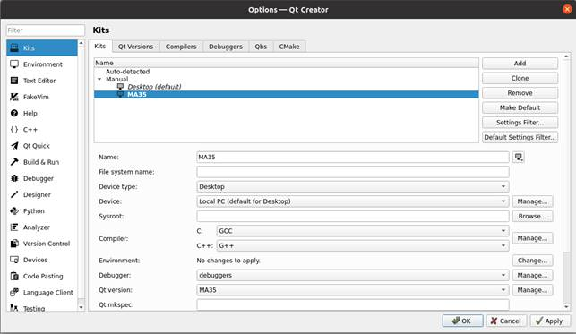
4. Linux Compilation
This chapter mainly describes the compiling method of the source code related to the development board, including the kernel source code compilation and the application program compilation.
4.1 Preparation Before Compilation
4.1.1 Description of the Environment
Development environment OS: Ubuntu20.04 64-bit version
Cross-toolchain: aarch64-nuvoton-linux-gnu-gcc
The board uses the Bootloader version: u-boot-2020.07.
Development Board Kernel: Linux-5.10.140
Development board porting QT version: qt5.12.8
4.1.2 Source Code Copy
Source Code: OK-MA35-S21 _Linux6.1.33+Qt5.12.8_User Profile\2-Image and Source Code\1-Source Code\ OKMA35_Linux_SDK.tar.bz2.00
Create a working directory
forlinx@ubuntu:~$ mkdir -p /home/forlinx/MA35 //Create the working directory in order
Copy the source code file OKMA35_Linux_SDK.tar.bz2.00 in the user data to the/home/forlinx/ MA35 directory of the virtual machine.
forlinx@ubuntu:~$ cd /home/forlinx/MA35 //Switch to the working directory
forlinx@ubuntu:~/MA35$ cat OKMA35-linux-sdk.tar.bz2.0* > OKMA35-linux-sdk.tar.bz2
forlinx@ubuntu:~/MA35$ tar -xvf OKMA35-linux-sdk.tar.bz2 //Decompress the compressed package in the natural location
Just run the command and wait for it to complete.
4.1.3 Configuration of the Cross-compiler
Copy OK-MA35-S21 _ Linux 5.10.140 + Qt5.12.8 _ User Profile\ 3-Tools \ aarch64-nuvoton-linux-gnu _ sdk-build root _ installer to the virtual machine ~ directory, and enter this directory.
forlinx@ubuntu: ~/$ chmod 777 aarch64-nuvoton-linux-gnu_sdk-buildroot_installer
forlinx@ubuntu: ~/$ sudo ./aarch64-nuvoton-linux-gnu_sdk-buildroot_installer
forlinx@ubuntu: ~/$ source /opt/aarch64-nuvoton-linux-gnu_sdk-buildroot/environment-setup
4.2 Source Code Compilation
Note:
After the kernel source code is decompressed for the first time, the source code needs to be compiled as a whole;
After compiling as a whole, you can compile separately according to the actual situation;
The source code compilation requires a development environment with a running memory of 8G or above. Please do not modify the VM virtual machine image configuration provided by us.
4.2.1 Full Compilation Test
Switch to the extracted source code path at the terminal:
forlinx@ubuntu:~$ cd ~/MA35/OKMA35-linux-sdk/
The following operations need to be done in the source directory:
Note: For the first compilation, you need to configure the cross-compilation tool chain in Section 4.1.3
If the memory capacity is 1G:
forlinx@ubuntu: ~/MA35/OKMA35-linux-sdk$./build.sh all 1g
If the memory capacity is 512M:
forlinx@ubuntu: ~/MA35/OKMA35-linux-sdk$./build.sh all 512m
The final compilation effect is shown in the following figure (the path may be different according to the actual situation):
After successful compilation, the corresponding compilation project result file will be generated in the OKMA35-linux-sdk/images folder, and the image file will be found.
Note: pack-image-OKMA35-S2_emmc-sdcard.bin is used for USB full flashing, other files are used for single-step flashing.
4.2.2 Individual Compilation Tests
Compile Uboot Separately:
forlinx@ubuntu: ~/MA35/OKMA35_Linux_SDK$./build.sh uboot 1g/512m //Generate u-boot.bin，path/OKMA35-linux-sdk/images/
Compile the kernel separately:
forlinx@ubuntu: ~/MA35/OKMA35-linux-sdk$./build.sh kernel 1g/512m //Generate Image和Image.dtb，path/OKMA35-linux-sdk/images/
Compile the apps separately
forlinx@ubuntu: ~/MA35/OKMA35-linux-sdk$./build.sh apps //Generate a forlinx application that is automatically installed on the file system
Compile rootfs separately
forlinx@ubuntu: ~/MA35/OKMA35-linux-sdk$./build.sh rootfs
4.2.3 Clearance of Files Generated by the Compilation
The user performs the operation in the kernel source code path.
forlinx@ubuntu: ~/MA35/OKMA35-linux-sdk$./build.sh clean
This operation clears all intermediate files. However, it does not affect the source file, including the source file that has been changed, and the path may be different according to the actual situation.
Clear the kernel separately:
forlinx@ubuntu: ~/MA35/OKMA35-linux-sdk$./build.sh clean_kernel
Clear Uboot separately：
forlinx@ubuntu: ~/MA35/OKMA35-linux-sdk$./build.sh clean_uboot
4.3 Application Compilation and Operation
4.3.1 Command Line Application Compilation and Operation
This subsection uses the watchdog test program, the default program in the OKMA35-linux- sdk/app/forlinx/forlinx_cmd/fltest_watchdog.
1. Use the cd command to enter the directory /home/forlinx/ MA35
forlinx@ubuntu:~$ cd /home/forlinx/MA35/OKMA35-linux-sdk/app/forlinx/forlinx_cmd/fltest_watchdog
2. Add the cross-compiler path and use make to cross-compile.
forlinx@ubuntu: ~/MA35/OKMA35-linux-sdk/app/forlinx/forlinx_cmd/fltest_watchdog$ source /opt/aarch64-nuvoton-linux-gnu_sdk-buildroot/environment-setup
（If the following content pops up, the setting is successful）
_ _ _ _ _
| |__ _ _(_) | __| |_ __ ___ ___ | |_
| '_ \| | | | | |/ _` | '__/ _ \ / _ \| __|
| |_) | |_| | | | (_| | | | (_) | (_) | |_
|_.__/ \__,_|_|_|\__,_|_| \___/ \___/ \__|
Making embedded Linux easy!
Some tips:
* PATH now contains the SDK utilities
* Standard autotools variables (CC, LD, CFLAGS) are exported
* Kernel compilation variables (ARCH, CROSS_COMPILE, KERNELDIR) are exported
* To configure do "./configure $CONFIGURE_FLAGS" or use
the "configure" alias
* To build CMake-based projects, use the "cmake" alias
3. Use make to cross-compile.
forlinx@ubuntu: ~/MA35/OKMA35-linux-sdk/app/forlinx/forlinx_cmd/fltest_watchdog$ make
aarch64-linux-gcc watchdog.c -o fltest_watchdog
generate fltest_watchdog success!!!
Use the file command to view the generated file information
forlinx@ubuntu:~/MA35/OKMA35-linux-sdk/app/forlinx/forlinx_cmd/fltest_watchdog$
file fltest_watchdog
fltest_watchdog: ELF 64-bit LSB executable, ARM aarch64, version 1 (SYSV), dynamically linked, interpreter /lib/ld-linux-aarch64.so.1, for GNU/Linux 5.10.0, not stripped
From the result, you can see that the compiled 64-bit ARM file.
4. Copy the fltest _ watchdog generated by compiling to the board through U disk or FTP, for example, under the path. Take the USB disk as an example, copy it to the development board and run the test.
root@OKMA35-C:/# cp /run/media/sda1/fltest_watchdog /
root@OKMA35-C:/# ./fltest_watchdog
Watchdog Ticking Away!
5. Refer to the chapter “Watchdog Test” in the user’s manual for the test;
4.3.2 Qt Application Compilation and Application
Enter/home/forlinx/Qt5.12.8/Tools/QtCreator/bin, start Qt creator：
forlinx@ubuntu:~/Qt5.12.8/Tools/QtCreator/bin$ ./qtcreator
Start the Qt Creator program, enter the Qt Creator interface, click New File or Project “to create a project, and select Application-> Qt Widgets Application”. Then click “Choose” in the lower right corner:
In the following interface, change the name of the new project to “helloworld”, select the installation path /home/forlinx, and then click “Next”:
Select qmake and click Next to continue.
In the following screen, change the class name to “helloworld”, select the base class to “Qwidget”, and then click “Next”.
In the following screen, select “ma35” as the kit of the current project, and then click “Next”:
In the following interface, click “Finish” to complete the new project:
After the new project is created, the following window will be displayed:
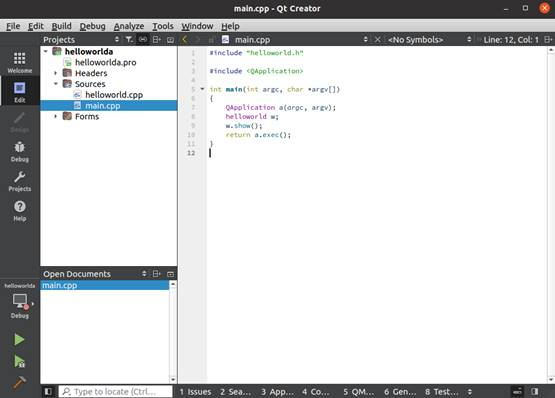
When the program is completed, click the hammer icon in the lower left corner to cross-compile. Copy the compiled executable program helloworld to the development board to test the application.